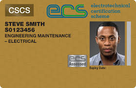

Official-style ECS Engineering Maintenance Electrician Gold Card – advanced level electrical maintenance certification recognised across UK industrial sites.
Professional Gold Certification
The ECS Engineering Maintenance Electrician Gold Card is designed for
experienced electricians who specialise in the maintenance, servicing and repair of
electrical systems in industrial and commercial environments. This advanced certification
demonstrates both technical competence and a strong commitment to safety standards.
From planned preventative maintenance to fault-finding and emergency repairs, the
Engineering Maintenance Electrician Gold Card helps employers, clients
and duty-holders see that you meet recognised UK standards for electrical maintenance work.
3 Year Validity
Standard Gold Card validity period
Maintenance Specialisation
For experienced maintenance electricians
Industry Recognition
Accepted across UK industrial sectors
NVQ/SVQ Level 3
Typical minimum qualification level
Select Your Engineering Maintenance Electrician Gold Card Service
Documentation requirements vary slightly for new, renewal and replacement Engineering Maintenance Electrician Gold Cards.
Eligibility Requirements
-
Holds relevant qualifications in electrical maintenance, typically NVQ/SVQ Level 3 or an equivalent recognised qualification.
-
Proven practical experience in engineering maintenance, fault-finding and repair tasks.
-
Passed the ECS Health, Safety & Environmental Assessment or holds an accepted exemption.
-
Normally a minimum of three years’ experience in maintenance electrician roles.
-
Valid proof of identity (Passport, photocard Driving Licence or other government-issued ID).
Required Documentation
-
Completed ECS Engineering Maintenance Electrician Gold Card application form.
-
Proof of qualifications (NVQ/SVQ Level 3 in Electrical Maintenance or equivalent).
-
Proof of ECS Health, Safety & Environmental Assessment pass (or accepted exemption).
-
One recent passport-style photograph.
-
Proof of ID and proof of address dated within the last three months.
Training & Assessment
Approved UK training providers offer advanced electrical maintenance courses and
ECS Health, Safety & Environmental assessments. These can usually
be booked through registered centres, employers or training organisations.
Application Process
- Confirm that you hold the required NVQ/SVQ Level 3 (or equivalent) in Electrical Maintenance.
- Gather evidence of your practical engineering maintenance experience and references where applicable.
- Pass the ECS Health, Safety & Environmental Assessment, unless you hold an accepted exemption.
- Complete the online Engineering Maintenance Electrician Gold Card application form with all supporting documents.
- Submit your application and pay the service fee (typically £79 + VAT for our support service).
- Once approved, your Gold Card is normally produced and dispatched within 10–15 working days.
Card Benefits
Industry Recognition
Recognised across UK industrial and commercial sectors as proof of advanced electrical maintenance competence.
Technical Competence
Demonstrates strong fault-finding, maintenance and safety skills for complex electrical systems.
Site Access
Supports access to UK industrial and construction sites where ECS or equivalent cards are required.
Career Progression
Helps progression towards senior maintenance, engineering technician or supervisory roles.
Renewal Process
-
Pass a fresh ECS Health, Safety & Environmental Assessment before renewal.
-
Submit an updated application form along with any new qualifications or training.
-
Pay the renewal fee as advised at the time of application.
-
Provide evidence of continued professional development and ongoing maintenance work.
Frequently Asked Questions – Engineering Maintenance Electrician Gold Card
How long does the application process take?
Once we receive your complete application with all required documents, it typically
takes around 10–15 working days to process and dispatch your
Engineering Maintenance Electrician Gold Card. Incomplete applications may experience delays.
What is the ECS Health, Safety & Environmental Assessment?
This mandatory assessment checks your understanding of health, safety and environmental
duties on UK industrial and construction sites. It must usually be passed before a new
or renewed Gold Card can be issued.
How long is the Engineering Maintenance Electrician Gold Card valid for?
The Engineering Maintenance Electrician Gold Card is normally valid
for three years. To keep it valid you will usually need to renew it
before the expiry date and complete a new ECS HSE assessment.
What qualifications are required for the Gold Card?
The typical minimum requirement is an NVQ/SVQ Level 3 in Electrical Maintenance
or an equivalent qualification recognised by the JIB, plus suitable experience in
maintenance electrician roles on UK sites.